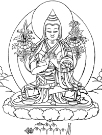

|
上师瑜伽速赐加持
索达吉堪布 讲
今天给大家讲一下上师瑜伽。
前两天举行了“纪念法王如意宝圆寂三周年”法会，在法会期间，大家都诚心地祈祷上师，念诵《上师供仪轨》，通过金刚萨�市薹�来进行忏悔，每个人应该都念了四十万遍金刚萨�市闹洌�对自相续有一定的净化作用。过两天我准备传讲《闻解脱》，也就是《六中阴引导文》，修这种密法，上师瑜伽是不可或缺的。当然，不仅修密法需要上师瑜伽，修持任何一种法，包括人身难得、寿命无常、皈依、发心等，都离不开上师瑜伽，它既可以列为前行，也可以列入正行当中。
对每个人来讲，修行必须依靠一种特殊的加持，如果不讲究这些，佛教完全是理论的话，那就成了一种学术研究。虽然世人认为这种治学精神很有意义，但真正的佛教，既要讲理性，也要讲感性。假如不懂道理全凭信心，就像某些偏僻地方的迷信一样，相续中不一定产生稳固的定解；若全靠分别念推测而不讲信心加持，则已经失去了佛教徒的身份。因此，理性和感性这两者，在修行中都不可缺少。
现在很多人希望通过密宗、禅宗的修行认识心的本性，这首先需要上师的加持。有偈颂云：“从功德上讲，上师与佛没有差别；但从恩德上而言，上师超过了一切诸佛。”往昔有不计其数的诸佛转法轮度化众生，然我们未曾得以调化，而今上师依靠善巧方便的慈悲摄受，在我们相续中播下了解脱的种子，并使之逐渐成熟，只要有信心，即生成就已稳操胜券。故从恩德上讲，不管藏传佛教还是其他传承，上师的确超过了一切，甚至超过了本尊。
这一点，在印度佛教历史上也能得以证明。以前马尔巴罗扎通过祈祷，见到上师那若巴，同时也现见了喜金刚本尊坛城。当时马尔巴罗扎选择向本尊顶礼，而没有在上师面前求悉地。以这种缘起，他的解脱成就因此而拖延，没有获得即生成佛，尽管他的法脉绵绵相传，但他的子系传承却从此间断。
藏传佛教的历史也是这样。曼达热哇祈求莲花生大师时，现前了普巴金刚（金刚橛）的坛城，他选择在本尊面前求悉地，而没有向上师求取。以此缘起，莲花生大师的意传加持，直接赐予空行母益西措嘉，曼达热哇并没有得到。
从这些文字记载来看，修本尊与修上师比起来，上师的加持更为殊胜。也可以说，我们的成就与上师的加持是离不开的，任何一个开悟、任何一种境界，完全依靠上师而获得。
另外，成就的印证也离不开上师。汉传佛教的永嘉禅师，原名玄觉，后以祖籍永嘉得名。他年轻时在善知识面前听闻过一些佛法，精通天台宗的止观法要，后来研读《无垢称经》（即《维摩诘经》），明白了心地法门，证悟了心的本性。有一次，六祖大师的弟子玄策禅师来访，和他交谈的过程中，发现他谈的道理与过去祖师所说相合，以为他是自己本宗的人，于是问：“你的师父是谁？在哪里得的法？”他说：“我以前学过很多法门，但真正的开悟，是依靠自己读诵《维摩诘经》。”玄策禅师又问：“你是哪一位上师印证的？”“我没有上师印证。”玄策禅师说：“佛陀在世时，应由佛陀来印证；佛陀涅��之后，若没有师父给你印证，这都叫做天然外道（顺世外道），不是佛教。”永嘉禅师一听，马上说：“那请你给我印证。”玄策禅师回答：“我不够资格，你最好到六祖那里去。”于是永嘉禅师前往曹溪求取印证，并终获六祖认可，留下了“一宿觉”的千古美谈。这段经历在《坛经》中有记载，以前宣化上人在美国三藩市宣讲时，也讲得比较详细。
有些人认为：“在四皈依（皈依上师、皈依佛、皈依法、皈依僧）中，皈依上师放在首位，上师的地位比佛还高，这是藏传佛教的独特做法。”我个人并不这样认为，凡是学禅宗的人都知道永嘉禅师，从他的公案也可以看出，证悟必须依靠上师来印证。所以上师的地位到底如何？由此也可见一斑。
汉传佛教中还有一个故事：过去有个老太太，她很想用功，于是请寺里的方丈开示她。但过去的方丈不是随便可以见的，要先禀告客堂，客堂转告侍者，侍者再去报告方丈，过了一道一道的关之后，才可以拜见。当时方丈的法务比较繁忙，侍者转告老太太的话之后，方丈说了句：“随缘而去！”那个老太太听后，觉得方丈给她传了很殊胜的法，就一天到晚“随缘而去”，把这当作念念不忘的课诵。（这与藏传佛教中“贫妇依狗牙成佛”的故事比较像。）结果她的外孙掉到河里了，人家跟她讲，她也“随缘而去”；自己的房子着火了，她也“随缘而去”。后来通过上师的加持，她开悟了。历史上确实发生过这样的事，现在的本焕老和尚，在禅堂里有时候也讲这个公案。
所以，密宗的上师相应法，上师与弟子之间的耳传、表示传等，应该说与汉传佛教的禅宗相同。按照某些人的观点，如果显宗非要次第经过五道十地才能成就，那六祖依靠五祖的加持及表示而顿悟，恐怕也无法自圆其说。故而，大家不要认为“上师超过一切”是藏传佛教的独门修法，藏传佛教只不过是文字和仪轨不同而已，宗旨上与汉传佛教无丝毫差别。
大家平时在修行中，一定要祈祷自己的上师。学什么宗派都没关系，最主要的是有信心，这种信心则依靠上师而产生，若对上师没有信心，开悟、证悟非常困难。前辈高僧大德也说过：“诸佛菩萨相当于阳光，我们的相续好比绒草，绒草放在阳光下，假如没有取火镜，永远不可能烧起来。而一旦有了取火镜，绒草便会熊熊燃烧。同样的道理，要想获得诸佛菩萨的加持阳光，必须依赖于上师的取火镜，否则，获得成就十分困难。”因此，上师的加持及对上师的信心，是证悟心性最关键的一环。
经论中也说：“通达胜义俱生智慧，必须依靠积累资粮、净除罪障、具证上师的加持，除此三者之外，若欲寻觅其他方法，则是一种愚者之举。”所以，若想证悟胜义空性，最重要、最根本的是什么？就是在修行过程中，尽量忏悔无始以来的业障，多积累善根资粮，不断祈祷上师的加持。
在祈祷上师的时候，应视上师与真佛无二无别。什么时候有了这种定解，什么时候你就有了证悟的机会。当然，现在也有很多假上师，把他们看作与佛无别，恐怕是不现实的。但真正的具相上师与佛等同，这在显密经论中都可以成立。比如，显宗从不了义的角度来讲，承认上师是佛陀的化身，《大鼓经》中云：“阿难莫哀伤，阿难莫哭泣，我于未来时，化为善知识，利益汝等众。”意思是说，释迦牟尼佛临近涅��时，阿难等有缘弟子泣不成声，此时佛陀安慰道：“你们不要痛哭伤心，我将来会化现为善知识，以此方式来度化你们。”《殊胜等持经》（《殊胜等持经》云：“善男子，末法之时，我化现为善知识宣说此等持法门，是故善知识乃汝之本师，直至菩提果之间当依止且恭敬承侍。”）、《顶宝龙王请问经》（《顶宝龙王请问经》云：“天子，若依止善知识恭敬承侍，则亲睹一切如来清净刹土，获得殊胜大悲等持，不离智慧波罗蜜多，令一切众生圆满成熟，圆满一切所愿）等经典中，也说上师就是佛陀的化身。从了义的角度而言，上师所证悟的明空无二的法界本体，正是十方诸佛的法身。因此，不管从了义、不了义的角度来讲，上师与佛的色身和法身无二无别。
若把上师视为真佛，将会获得不可思议的加持。在印度历史上，龙猛菩萨丢了一把鼻涕，他的弟子龙菩提全部拾起来吃了，依此而获得殊胜成就。藏传佛教中，霞叶瓦尊者承事金厄瓦格西时，一切内外事务皆是他一人承担，从来没有修法的机会，但他坚信：恭敬承事上师，就是最殊胜的修法。有一次，他走到第三级台阶时，依靠上师的加持，倏然证悟了心的本性。所以大家要从内心深处多祈祷上师，现在有一种“喇嘛钦”的音乐，你们一边听，一边以大信心祈祷上师，应该会有开悟的机会。
前段时间，《入行论》中也提过，如来芽尊者就是思念上师而开悟的。还有一位酿・尼玛哦热（日光）尊者，也是藏传佛教了不起的大成就者，他闭关三年专修“上师三身总集法”，通过信心现见了莲花生大士，又照见了空行母益西措嘉，最后前往清净刹土。此外，智悲光尊者二十八岁到各地闭关，后在青普神山的山洞里修行时，所得的验相、证悟的境界不可胜数，而其中最为殊胜的，就是通过祈祷无垢光尊者，先后三次得到尊者以智慧身进行摄受。上师如意宝也是诚心祈祷麦彭仁波切，得到麦彭仁波切的智慧身摄受之后，获得开悟，弘法利生事业势不可挡。在藏传佛教中，这样的历史非常多。
作为传承弟子，在所有的修法中，我们要把上师瑜伽放在首位，无论白天也好、晚上也好，经常祈祷自己的上师。当然，祈祷的方式多种多样，如《大圆满前行》中的仪轨，是以莲花生大士为根本上师来修持；还有一些别的法门，把根本上师观为其他形象……。但今天给大家介绍的是，上师如意宝亲自造的一个非常简短的上师瑜伽――《上师瑜伽速赐加持》。
我以前看过不少上师瑜伽，其中的念诵和修法比较复杂，现在末法时代的人这么懒惰，工作这么忙，生活上有许多安排不过来的琐事，为了照顾他们，上师如意宝赐予的上师瑜伽也非常简略。希望大家，包括学习《入行论》的各大教派的弟子们，平时能够经常修持。
在座的有些人有缘亲见过法王如意宝，并得受了殊胜的灌顶和教言；有些人只听过他老人家的名号；有些连名号也不一定听过，但不管怎么样，只要有信心，加持的力量不会有丝毫影响。诚如智悲光尊者一样，他依凭对无垢光尊者的无上信心，二者虽然相隔了上百年，但仍能得到尊者的慈悲摄受。因此，我非常希望凡是听受《入行论》及其他论典的道友，一定要好好祈祷上师如意宝。
上师如意宝是一切诸佛菩萨的总集，是三宝的根本，是三根本的本体。任何一个人只要诚心祈祷，上师就像如意宝一样，定会赐予种种所欲。我本人今天有机会给大家传授佛法，完全来源于上师的加持，上师的恩德无量无边，自己确实难报其万一。大家务必要励力祈祷上师，只有这样，心相续才会有大的转变。否则，只把它当作理论来研究，不可能令佛法融入内心。因此，我再再地希望大家，每天念诵《上师瑜伽速赐加持》，即使你再忙，抽出几分钟应该没有问题。
下面具体介绍一下它的修法：
首先念皈依颂，观想：“上师是三宝、三根本及一切诸佛菩萨的本体，我今天要皈依上师，乃至永远也不舍离。”以此心态念诵三遍：
那葵内色那卡刚瓦耶 安住虚空遍满虚空者
喇嘛耶丹堪竹措南当 上师本尊空行诸会众
桑吉秋当帕波给登拉 诸佛正法以及圣众前
达当桌折给贝嘉色切 我与六道众生敬皈依
接着念发心偈，观想：“为利益天边无际的一切众生，我要修持上师的果位而发无上菩提心。”以此心态念诵三遍：
达当塔意思剑南 我与无边诸有情
噫内桑吉印巴拉 本来即是正觉尊
印巴西波达涅德 了知如是之自性
香且确德思吉斗 即发殊胜菩提心
之后观想：轮回涅��、清净不清净所摄的一切万法，是本来清净的大空性，在此境界中，自相不灭地显现出莲花和月轮。莲花和月轮之上观想红黄色的“德（）”字，“”字变成宝剑――文殊菩萨的标志。宝剑渐化为黄文殊，黄文殊变成上师，上师的形象是法王如意宝，本体与文殊智慧勇识无二无别，在五光萦绕的净现中显现。身上具足班智达的一切服饰，以说法手印持着莲花、经函和宝剑，金刚跏趺坐的方式而安住。
啊 啊
科德曲更甲达如毕昂 轮涅诸法本净觉性中
让当玛甲意西俄爱龙 自性不灭智慧五光界
俄吾华单加毕多吉啦 本体具德文殊金刚尊
南巴加吉意斯洛布尼 形象唯一怙主如意宝
呷萨则争班智达义其 白明美颜班智达之饰
曲恰夏杰 支拿瓦南 说法手印持执宝剑函 支拿瓦南 说法手印持执宝剑函
夏尼吉中俄热木美卓 二足跏趺照射无边光
让郎达毕坚得拉美萨 一切自现观为净明然

上师的身姿服饰等，与麦彭仁波切、宗喀巴大师的完全一样。唯一不同的是，面容是法王如意宝的形象。
有些人根据《金刚帐续》的观点说，不能观为上师的形象，必须要观佛陀或本尊的形象。但无垢光尊者在《大圆满虚幻休息》中反驳道：“这是不合理的。因为这是修上师瑜伽，而不是修本尊瑜伽。经续中并没有说依靠本尊六个月就能成就，而唯有修持上师瑜伽，才能获得这种悉地。”所以，一定要观上师的形象。
还有些人认为只要皈依三宝就可以了，没有必要修持上师。这种说法也不合理。上师既是佛宝，也是法宝，又是僧宝，上师的身口意与三宝无二无别。因此，要观想上师是三宝的总集。
如是观想上师安住于前方的虚空中，一心一意念诵上师祈祷文：
涅庆日俄再爱香克思 自大圣境五台山
加华头吉新拉意拉闷 文殊加持入心间
晋美彭措夏拉所瓦得 祈祷晋美彭措足
共机多巴破瓦新吉罗 证悟意传求加持
此文念多长时间都可以，至少是三遍以上，或者七遍、二十一遍。
随力念诵后，上师化为五光明点，从自己头顶融入心间，观想上师相续中的慈悲、智慧、等持、总持等所有功德，以及一切灌顶、教授，自己全部无余获得，自己的分别念与上师的智慧变成无二无别。在这样的境界中稍许安住。
蹋尼喇嘛俄爱头耐吉 后师已成五光之明点
让革即俄涅修娘为腾 由从自顶渗入于心间
嘉更意西旧第喇嘛当 当思诸佛智慧总集师
嘎瓦南毕新拉托巴萨 获得于彼同分之加持
起定后，开始回向，观想：“我今天修上师瑜伽为主的一切善根，回向三界的老母有情，愿他们早日获得上师的果位。”
结瓦根德样达喇嘛当 生生世世不离师
札梅秋结华拉隆修内 恒时享用胜法乐
沙当兰结云单造内 圆满地道功德已
多吉蔷格顾旁涅脱效 唯愿速得金刚持
平常看到任何色法，都应观想为上师的形象；听到任何声音，都观想为上师的金刚语；心里的各种起心动念，都观想为上师的智慧。行走坐卧皆安住于此境界中。这样之后，相信在不久的将来，大家定可获得与上师无二无别的果位。这一点，对后学者来讲非常重要！
《上师瑜伽速赐加持》修法仪轨
皈依偈：
那葵内色那卡刚瓦耶 安住虚空遍满虚空者
喇嘛耶丹堪竹措南当 上师本尊空行诸会众
桑吉秋当帕波给登拉 诸佛正法以及圣众前
达当桌折给贝嘉色切 我与六道众生敬皈依
发心偈：
达当塔意思剑南 我与无边诸有情
噫内桑吉印巴拉 本来即是正觉尊
印巴西波达涅德 了知如是之自性
香且确德思吉斗 即发殊胜菩提心
观想：
啊 啊
科德曲更甲达如毕昂 轮涅诸法本净觉性中
让当玛甲意西俄爱龙 自性不灭智慧五光界
俄吾华单加毕多吉啦 本体具德文殊金刚尊
南巴加吉意斯洛布尼 形象唯一怙主如意宝
呷萨则争班智达义其 白明美颜班智达之饰
曲恰夏杰支拿瓦南 说法手印持执宝剑函
夏尼吉中俄热木美卓 二足跏趺照射无边光
让郎达毕坚得拉美萨 一切自现观为净明然
祈祷：
涅庆日俄再爱香克思 自大圣境五台山
加华头吉新拉意拉闷 文殊加持入心间
晋美彭措夏拉所瓦得 祈祷晋美彭措足
共机多巴破瓦新吉罗 证悟意传求加持
随力念诵后：
蹋尼喇嘛俄爱头耐吉 后师已成五光之明点
让革即俄涅修娘为腾 由从自顶渗入于心间
嘉更意西旧第喇嘛当 当思诸佛智慧总集师
嘎瓦南毕新拉托巴萨 获得于彼同分之加持
回向偈：
结瓦根德样达喇嘛当 生生世世不离师
札梅秋结华拉隆修内 恒时享用胜法乐
沙当兰结云单造内 圆满地道功德已
多吉蔷格顾旁涅脱效 唯愿速得金刚持
如是离意法身中入定，彼中起坐时，观诸现有即师本性，而行平常威仪也。
|